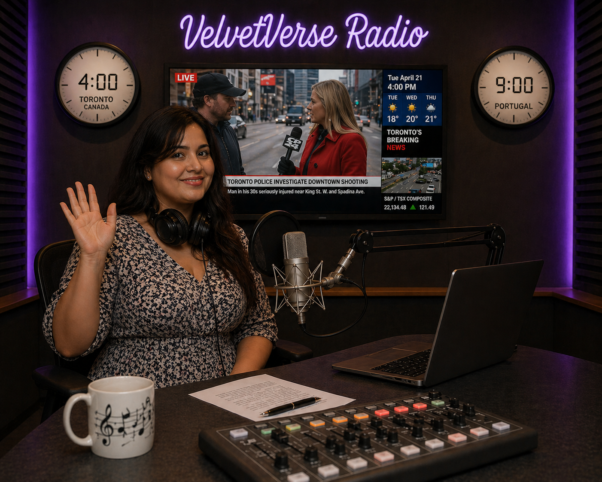

Uma viagem pelos ritmos, sotaques, tradições e histórias que fazem cada canto do Brasil soar de maneira única. Com Lara Ingrid, descobrimos a riqueza musical e cultural de um país cheio de vozes, cores e ritmos.

Da energia de Salvador às tradições do Recôncavo, uma viagem pelos ritmos, pela cultura e pelas histórias da Bahia.
▶ Ouve o episódio completo
Escolhe uma região para ver o episódio em destaque. Os áudios ficam disponíveis após a respetiva emissão.